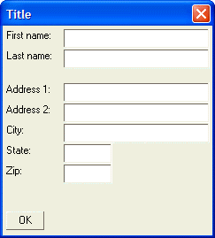

Address Dialog - Adding Blank Lines
To space out the vertical distance between controls on an Xdialog, you can insert blank lines using the '{lf};' command. This is analogous to pressing Enter on a blank line in a word processor to leave extra space between paragraphs.
NOTE It is important that the {lf}; command include the terminating ';' character. This is because Xdialog does not normally allocate any space to blank rows or cells. A blank row that is terminated with a ';' will not take up any space on the dialog. However, the {lf} command instructs Alpha Anywhere to allocate the standard line height to the blank line.
The following script puts a blank line after the Lastname row and puts two blank lines between the Zip row and the OK button:
result=ui_dlg_box("Title",<<%dlg% First name:| [.32firstname]; Last name:| [.32lastname]; {lf}; Address 1:| [.32address1]; Address 2:| [.32address2]; City:| [.32City]; State:| [State]; Zip:| [Zip]; {lf}; {lf}; %dlg%) |
This script produces this dialog:

Lesson 3: Address Dialog - Adding Blank Lines
Next
Address Dialog - Spacing of Controls
Limitations
Desktop applications only.